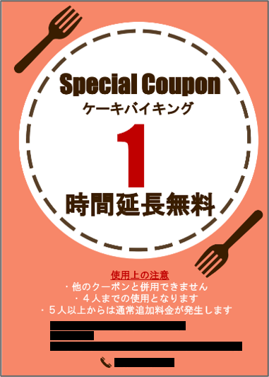
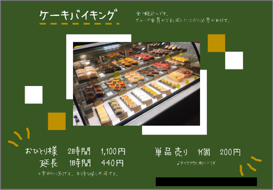
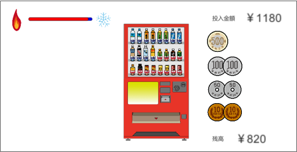
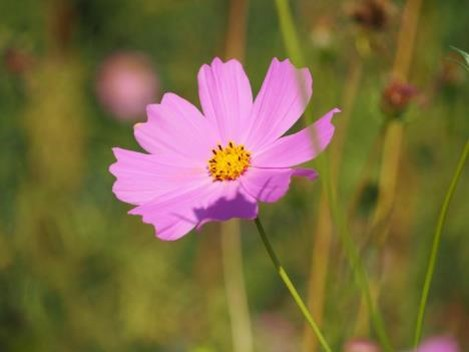

WORKS
地元発見Webサイト
地元長崎県大村市の魅力を発信するという目的でページを作成を行いました。
全体的に落ち着いて、すっきりとしたデザインにすることで統一感を出しました。
jQueryを利用して、動的で閲覧者が退屈しない快適なホームページを心掛けるのと、その中でもアニメーションを利用しすぎて ごちゃごちゃにならないよう節度を考えました。
配色は大村の象徴と言えるオオムラザクラをイメージしたピンクを基本とし、テーマにあった配色を意識しました。
講義内のピアレビューでは、ユーザビリティ部門で最多得票、総合評価部門で最多得票を獲得しました。
全体的に落ち着いて、すっきりとしたデザインにすることで統一感を出しました。
jQueryを利用して、動的で閲覧者が退屈しない快適なホームページを心掛けるのと、その中でもアニメーションを利用しすぎて ごちゃごちゃにならないよう節度を考えました。
配色は大村の象徴と言えるオオムラザクラをイメージしたピンクを基本とし、テーマにあった配色を意識しました。
講義内のピアレビューでは、ユーザビリティ部門で最多得票、総合評価部門で最多得票を獲得しました。
クサイセリフ展覧会！
クサイセリフを展示するページを作成し、クサイセリフ、いいね数、
ユーザー名をデータベースで管理しています。
これをPHPで制御し、セリフ登録ページや、いいね機能、 セリフのランキングを実装しました。
これをPHPで制御し、セリフ登録ページや、いいね機能、 セリフのランキングを実装しました。

InstagramのUI/UXデザイン
InstagramのUI/UXデザイン改善案です。
デザイン計画から始まり、対象ユーザーの設定、ユーザーへの アンケート実施、プロトタイプの作成、デザイン改善案に 対しての評価まで、一連の流れを行いました。
デザイン計画から始まり、対象ユーザーの設定、ユーザーへの アンケート実施、プロトタイプの作成、デザイン改善案に 対しての評価まで、一連の流れを行いました。
月見うどんCG
月見うどんのCGです。
麺を一本一本違う形で作成し、麺のうねりを本物に近い形で再現しようとしました。
また、卵の反射を少し強めにして、美味しそうに見えることを意識しました。
また、卵の反射を少し強めにして、美味しそうに見えることを意識しました。
銀河鉄道９９９
MIDI作品です。
楽曲は、ゴダイゴの「銀河鉄道９９９」です。
厚みを出すために楽器を7つほど使用し、その楽器同士が喧嘩しないように、音量調整を工夫しました。
厚みを出すために楽器を7つほど使用し、その楽器同士が喧嘩しないように、音量調整を工夫しました。
illustrator
illustratorを使用して作成した作品です。
Photoshop
Photoshopを使用して作成した作品です。
うみねこ映画祭
２つ上の先輩方が長崎県初の学生主催の映画祭を開催するということを聞き、
ボランティアとして映画祭のお手伝いをさせていただきました。
新型コロナの状況下の中でも、学生映画を知ってもらいたい、文化芸術業界に 貢献したいという思いのもと開催された映画祭です。
私は主に、ポスターなどのデザインと、映画祭に向けての企画、当日の お手伝いなどの仕事を行いました。
新型コロナの状況下の中でも、学生映画を知ってもらいたい、文化芸術業界に 貢献したいという思いのもと開催された映画祭です。
私は主に、ポスターなどのデザインと、映画祭に向けての企画、当日の お手伝いなどの仕事を行いました。
店内チケット・POP

以前カラオケ店でアルバイトをしていた際に、頼まれて作成したポスターと
チケットのデザインです。
ここのカラオケ店はケーキバイキングがあり、ケーキバイキングの売上を向上 させるためにポスターデザインを考えました。店内の雰囲気と合うようなデザインを心掛けました。
チケットはイベントの特典として使うものでした。既存の別のチケットと 統一感を出しつつ、ケーキのかわいい雰囲気を出すことを心掛けました。
ここのカラオケ店はケーキバイキングがあり、ケーキバイキングの売上を向上 させるためにポスターデザインを考えました。店内の雰囲気と合うようなデザインを心掛けました。
チケットはイベントの特典として使うものでした。既存の別のチケットと 統一感を出しつつ、ケーキのかわいい雰囲気を出すことを心掛けました。
ハッカソン

ハックツハッカソンアンキロカップに参加したときに作成したものです。
お題が「あったまる」だったため、温泉×あったかい飲み物を組み合わせた あったか～いプロダクトを作成しました。
テーマは架空の温泉屋のホームぺージに付いているミニゲームです。
完成はしませんでしたが、自分の考え方を変えてくれたり、向上心が上がった 体験をしました。
LINK→ハッカソンレポート
お題が「あったまる」だったため、温泉×あったかい飲み物を組み合わせた あったか～いプロダクトを作成しました。
テーマは架空の温泉屋のホームぺージに付いているミニゲームです。
完成はしませんでしたが、自分の考え方を変えてくれたり、向上心が上がった 体験をしました。
LINK→ハッカソンレポート
写真

趣味で撮っています。